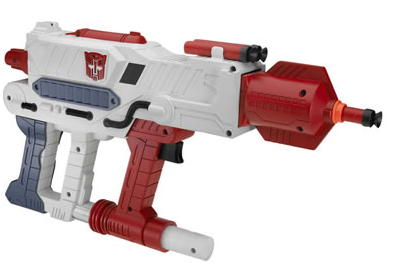
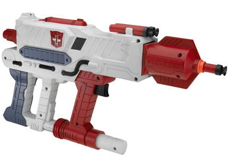
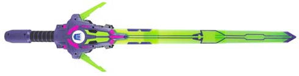

Allegiance : Autobot
Size : Roleplay ($20 U.S.)
Color Scheme : White, dark red, and some black, metallic dull pale bluish gray, and orange
Rating : 5.0
(NOTE: Since I don't have much to say about each of these roleplay toys individually, I've decided to review them both on one page.)
 Optimus'
Blaster
Optimus'
Blaster

Allegiance
: Autobot
Size
: Roleplay ($20 U.S.)
Color Scheme
: White, dark red, and
some black, metallic dull pale bluish gray, and orange
Rating
: 5.0
Optimus' Blaster is,
essentially, a Transformers-themed dart gun for kids to play with. It has
a pretty good, Autobot-ish color scheme, and some okay mold detailing,
although I think it could have used a bit more here and there. The paint
detailing is a little lacking, however, considering how many broad areas
on this gun there are. I mean, c'mon, you can get other good dart guns
for less than $20. Hasbro needs to put a bit more effort into making this
look really good if they expect parents to shell out $20 for it. The Blaster
itself fires three Nerf missiles, via a "pump" action used on many Nerf
guns. It's fairly satisfying, and although it doesn't fire the darts amazingly
far, it does a decent job. It's also a pretty decent size- roughly about
twice as large as the
Armada Roleplay Sabers
,
maybe even a bit larger than that. So don't expect some dinky gun here.
The gun also has a collapsible stock, although it feels kinda flimsy, so
I prefer not to mess with it. I guess this "stock" is supposed to be Optimus'
"transformation", but that's like saying me putting a hand behind my back
is transforming. And before you ask, Optimus' Blaster doesn't have any
electronics.
Optimus' Blaster is
a pretty good Nerf gun, but really, I can't see too many older collectors
having much fun with it. It's perfect for a young Transformers fan-in-training,
though.
 Megatron's
Sword
Megatron's
Sword

Allegiance
: Decepticon
Size
: Roleplay ($20 U.S.)
Color Scheme
: Transparent light
yellowish green, black, dark purple, and some light green, white, and dark
green
Rating
: 5.8
First off, let me just
point out that the official product picture above- taken from Transformers.com-
is not entirely correct. The magneta-ish paint apps above are now a dark
green, and all those cool paint apps on the blade don't exist on the final
product. Le sigh. Still, this is a pretty cool-looking sword. The color
scheme really looks nice, and it really looks like it belongs to a Decepticon
leader. A small switch turns the sword's sounds on and off, and besides
making "powering up" and "powering down" sounds, it also makes three different
(random) "slicing" sounds when you smack it against something. The actual
sword stays together pretty well, given that the blade is collapsable-
in fact, considering that the plastic used for the blade is reasonably
hard, I could easily see someone getting a little hurt with this. So parents,
if you're thinking about getting this for one of your kids, be sure to
keep an eye on them when they're playing with it. The sword can also switch
to "hyper mode" (also emitting another sound effect) by flipping out two
smaller side blades, but really, I think it's a stretch to even THINK of
it as a transformation. It's just a little gimmick, really. The sword itself
is also rather large- it's nearly 3 feet long when fully extended, so you
actually are getting your money's worth for this toy, if, of course, you
don't mind the lack of a transformation.
Megatron's Sword, just
like Optimus' Blaster, is an impressive roleplay toy, and great for younger
kids' (so long as they're supervised), but I don't think many older collectors
will get much of a kick out of it. It's a pretty sweet-looking sword, though,
and certainly better than those Roleplay Armada Sabers.
No Stats
Reviews by Beastbot
(Pictures taken from Transformers.com .)